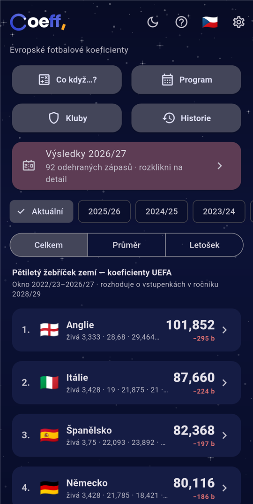
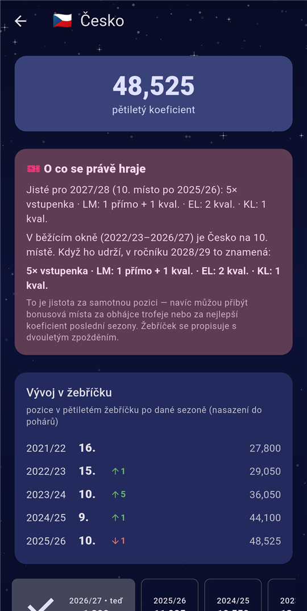
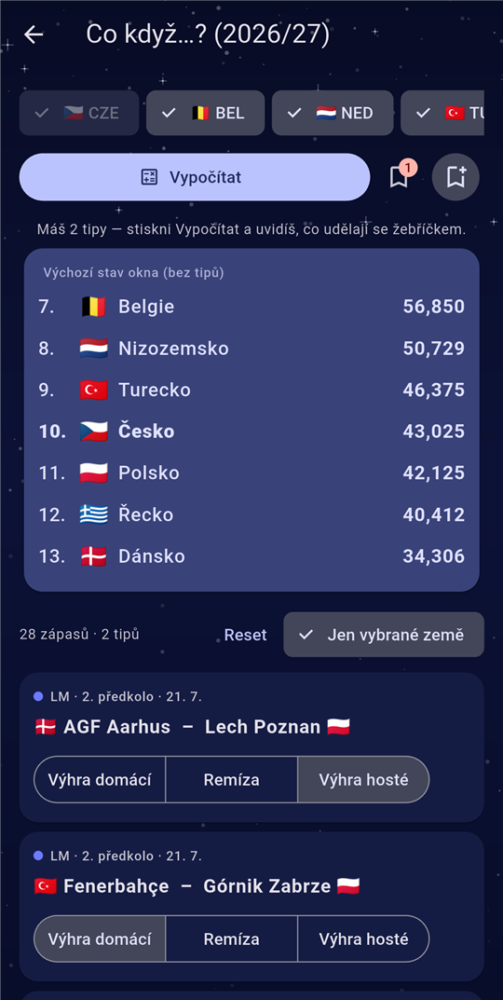
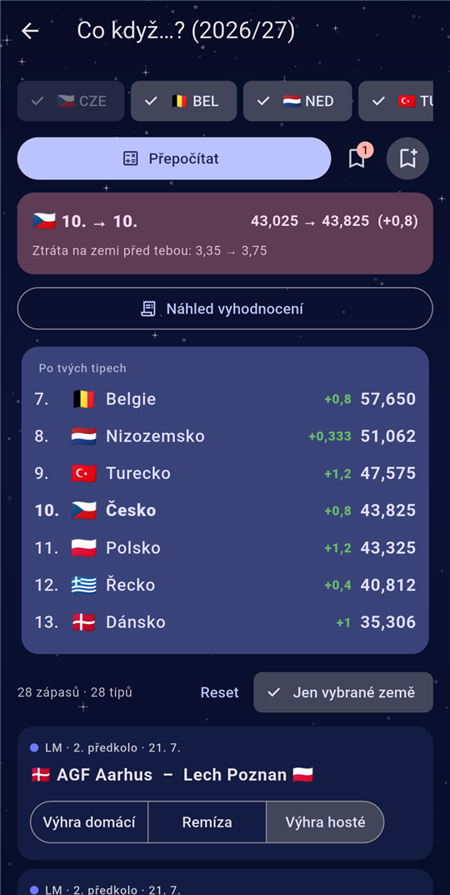
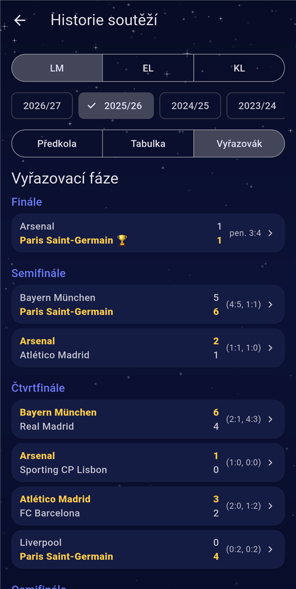
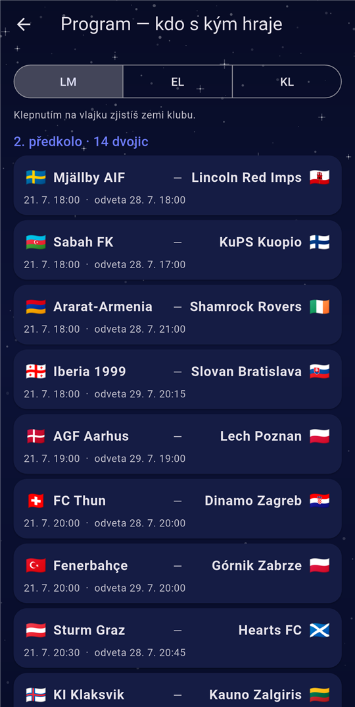
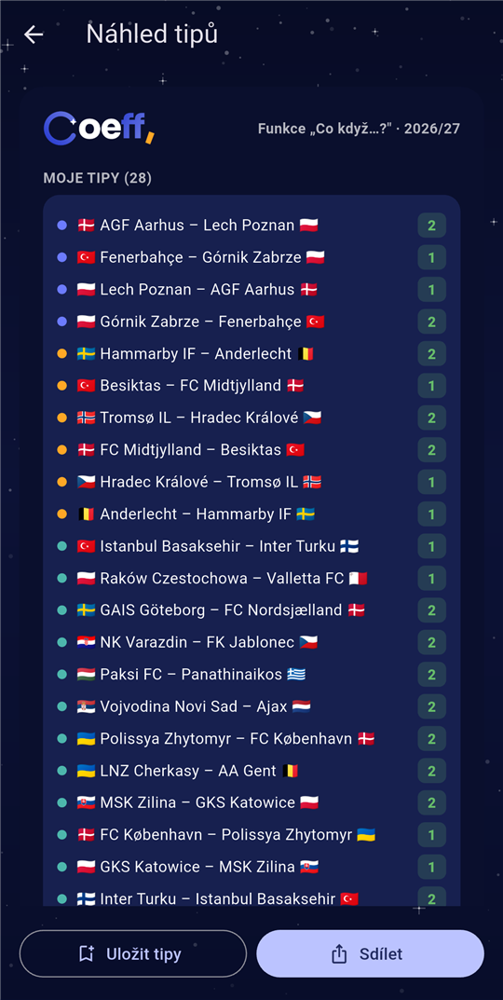

Aplikace Coeff: evropské fotbalové koeficienty — živě, přehledně a srozumitelně i pro nefajnšmekry.
Kolik míst v pohárech tvoje země uhraje? A co s tím udělá dnešní večer?
Zdarma, bez reklam a bez registrace.
Aplikace Coeff: evropské fotbalové koeficienty — živě, přehledně a srozumitelně i pro nefajnšmekry.
Kolik míst v pohárech tvoje země uhraje? A co s tím udělá dnešní večer?
Zdarma, bez reklam a bez registrace.
Pětiletý koeficient UEFA, posuny po každém kole a bodová ztráta na sousedy. Tvoje země zvýrazněná, žebříček se aktualizuje sám.
Kolik vstupenek do Ligy mistrů, Evropské a Konferenční ligy, co aktuální pozice zaručuje — přehledně a jednoduše.
Natipuj výsledky rozlosovaných zápasů a hned vidíš, co udělají se žebříčkem. Scénáře si ulož a sdílej jako obrázek, třeba i na sítě.
Pětiletý klubový žebříček (nasazení do losů), profil každého klubu s body po sezonách a všemi evropskými zápasy.
Pavouky předkol i vyřazovacích fází, tabulky ligové fáze, střelci a asistence — ročník po ročníku.
Push notifikace po odehraných kolech: výsledky klubů tvé země a posuny v žebříčku. Bez registrace a bez e-mailu.







Posouvej do stran pro další →
Liga mistrů · Evropská liga · Konferenční liga
Coeff zná pravidla bodování — půlené body v předkolech, bonusy za postup, dělení počtem klubů — a počítá koeficienty sám z výsledků. Hodnoty sedí na oficiální čísla UEFA.